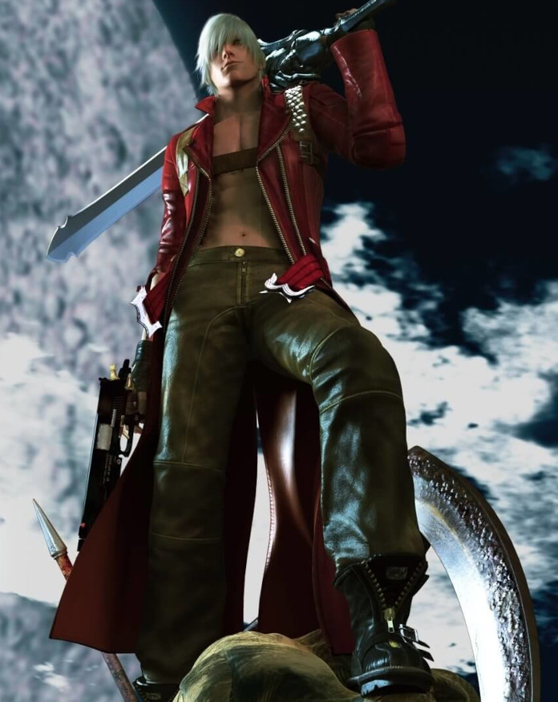

Dante é um mercenário paranormal, investigador particular e vigilante Caçador de Demônios dedicado a exterminar demônios malignos e outras forças sobrenaturais malévolas; uma missão que ele segue em busca daqueles que mataram sua mãe e corromperam seu irmão.